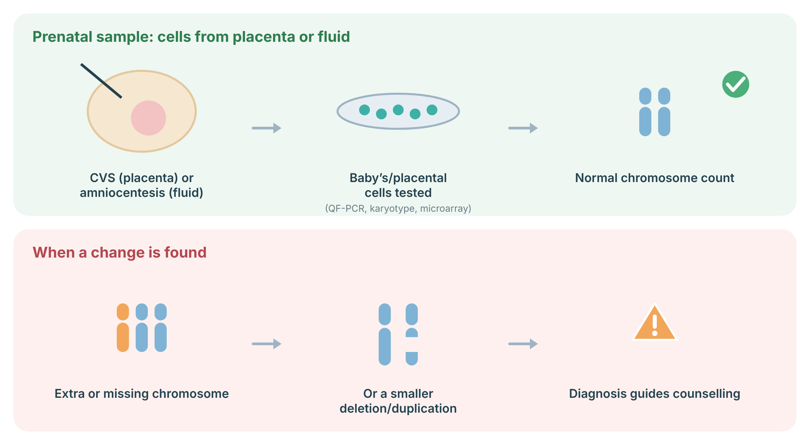
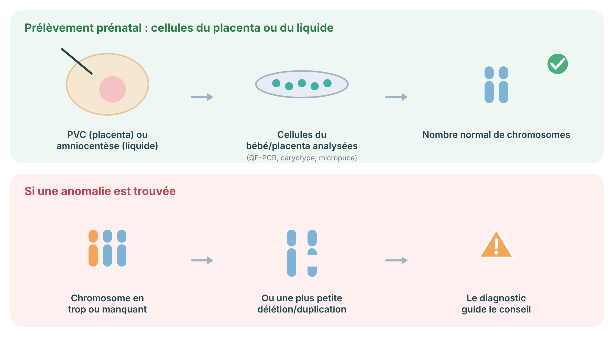

A test that produces a picture of all your chromosomes, to check their number and look for large structural changes.
A karyotype is a picture of your chromosomes — the 46 packages your DNA is organised into. It shows whether the number is right and whether any large pieces have moved, broken, or joined together. It is the test for whole-chromosome questions, such as an extra copy of a chromosome.
Diagnostic prenatal testing looks directly at cells from the pregnancy. CVS takes a small sample of placenta (usually from 11 weeks), and amniocentesis takes fluid around the baby that contains fetal cells (usually from 15 weeks). The DNA is tested by QF-PCR for a rapid count of key chromosomes, by karyotype to see whole chromosomes, or by microarray to find small deletions and duplications. Unlike screening, these tests give a diagnosis, with a small procedure-related miscarriage risk.

Sources: Navaratnam K, et al. BJOG 2022;129:e1–e15 (PubMed).
Cells are encouraged to grow, then their chromosomes are stained and photographed, and arranged in order. This lets the laboratory count them and spot large rearrangements, including “balanced” ones where pieces are swapped but nothing is gained or lost. These balanced changes can matter for fertility and for future pregnancies, and a microarray would usually miss them.
A sample — usually blood, or a prenatal sample in pregnancy — is taken, and the cells are encouraged to grow in the laboratory. Their chromosomes are then stained, photographed under a microscope, and arranged in order from largest to smallest. This lets the laboratory count them and check their shape, spotting an extra or missing chromosome or a large piece that has moved. Because the cells must grow first, this takes longer than many other tests.
A karyotype usually uses a blood sample; in pregnancy it can be done on a CVS or amniocentesis sample. Because the cells must grow first, results take longer than many other tests — often a couple of weeks. Your team will tell you the timeline for your situation.
| Term | In plain language |
|---|---|
| Gene | One “recipe” in your DNA — the instructions for one job. |
| Variant | A change in the spelling of a gene; a “typo.” May or may not matter. |
| Chromosome | A package your DNA is organised into. You have 46. |
| Sequencing | Reading DNA letter by letter. |
| Screen vs. diagnosis | A screen gives a chance; a diagnostic test gives a clearer yes-or-no. |
| VUS | A variant of uncertain significance: an effect not yet known. Not used to guide care. |
This is general education and does not replace a consultation. Which test is right for you, and what your result means, is decided together with your genetics team.
Un test qui produit une image de tous vos chromosomes, pour vérifier leur nombre et rechercher de grands changements de structure.
Un caryotype est une image de vos chromosomes — les 46 paquets dans lesquels votre ADN est organisé. Il montre si le nombre est correct et si de grands morceaux se sont déplacés, brisés ou rejoints. C'est le test des questions de chromosomes entiers, comme une copie supplémentaire d'un chromosome.
Le diagnostic prénatal examine directement des cellules de la grossesse. La PVC prélève un petit échantillon de placenta (habituellement dès 11 semaines) et l’amniocentèse prélève du liquide autour du bébé qui contient des cellules fœtales (habituellement dès 15 semaines). L’ADN est analysé par QF-PCR pour un comptage rapide des principaux chromosomes, par caryotype pour voir les chromosomes entiers ou par micropuce pour trouver de petites délétions et duplications. Contrairement au dépistage, ces tests donnent un diagnostic, avec un faible risque de fausse couche lié à l’intervention.

Sources : Navaratnam K, et al. BJOG 2022;129:e1–e15 (PubMed).
On encourage les cellules à se multiplier, puis leurs chromosomes sont colorés et photographiés, et placés en ordre. Cela permet au laboratoire de les compter et de repérer les grands remaniements, y compris ceux dits « équilibrés » où des morceaux sont échangés sans rien gagner ni perdre. Ces changements équilibrés peuvent compter pour la fertilité et les grossesses futures, et une micropuce les manquerait habituellement.
Un échantillon — habituellement du sang, ou un prélèvement prénatal pendant la grossesse — est prélevé, et les cellules sont encouragées à se multiplier au laboratoire. Leurs chromosomes sont ensuite colorés, photographiés au microscope et placés en ordre du plus grand au plus petit. Cela permet au laboratoire de les compter et de vérifier leur forme, en repérant un chromosome en trop ou manquant, ou un grand morceau déplacé. Comme les cellules doivent d'abord se multiplier, cela prend plus de temps que bien d'autres tests.
Un caryotype utilise habituellement un échantillon de sang; pendant la grossesse, il peut être fait sur un prélèvement de PVC ou d'amniocentèse. Comme les cellules doivent d'abord se multiplier, les résultats prennent plus de temps que bien d'autres tests — souvent quelques semaines. Votre équipe vous indiquera le délai pour votre situation.
| Terme | En langage simple |
|---|---|
| Gène | Une « recette » dans votre ADN — les instructions pour une tâche. |
| Variant | Un changement dans l'orthographe d'un gène; une « faute de frappe ». Peut compter ou non. |
| Chromosome | Un paquet dans lequel votre ADN est organisé. Vous en avez 46. |
| Séquençage | Lire l'ADN lettre par lettre. |
| Dépistage vs diagnostic | Un dépistage donne une probabilité; un test diagnostique donne un oui-ou-non plus clair. |
| VSI | Un variant de signification incertaine : un effet pas encore connu. Non utilisé pour guider les soins. |
Ceci est de l'information générale et ne remplace pas une consultation. Le test qui vous convient, et ce que votre résultat signifie, se décident avec votre équipe de génétique.